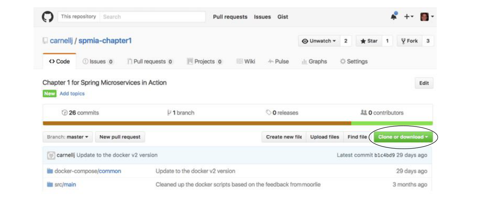

A.2 Tải các dự án từ GitHub
Tất cả mã nguồn của cuốn sách nằm trong kho GitHub của tôi (http://github.com/carnellj). Mỗi chương trong cuốn sách có kho mã nguồn riêng. Dưới đây là danh sách tất cả các kho GitHub được dùng trong cuốn sách:
- Chương 1 (Chào mừng đến với đám mây, Spring)—http://github.com/carnellj/spmia-chapter1
- Chương 2 (Giới thiệu về microservice)—http://github.com/carnellj/spmia-chapter2
- Chương 3 (Spring Cloud Config)—http://github.com/carnellj/spmia-chapter3 và http://github.com/carnellj/config-repo
- Chương 4 (Spring Cloud/Eureka)—http://github.com/carnellj/spmia-chapter4
- Chương 5 (Spring Cloud/Hystrix)—http://github.com/carnellj/spmia-chapter5
- Chương 6 (Spring Cloud/Zuul)—http://github.com/carnellj/spmia-chapter6
- Chương 7 (Spring Cloud/Oauth2)—http://github.com/carnellj/spmia-chapter7
- Chương 8 (Spring Cloud Stream)—http://github.com/carnellj/spmia-chapter8
- Chương 9 (Spring Cloud Sleuth)—http://github.com/carnellj/spmia-chapter9
- Chương 10 (Triển khai)—http://github.com/carnellj/spmia-chapter10 và http://github.com/carnellj/chapter-10-platform-tests
Với GitHub, bạn có thể tải các tệp dưới dạng tệp zip bằng giao diện web. Mỗi kho GitHub sẽ có nút tải xuống. Hình A.1 cho thấy vị trí nút tải xuống trong kho GitHub của chương 1.

Giao diện GitHub cho phép bạn tải một dự án dưới dạng tệp zip.